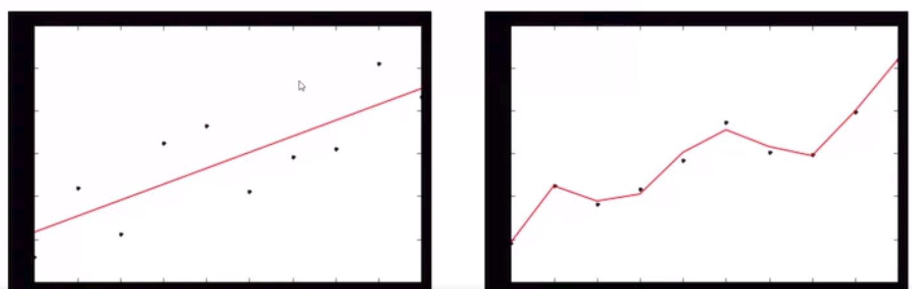
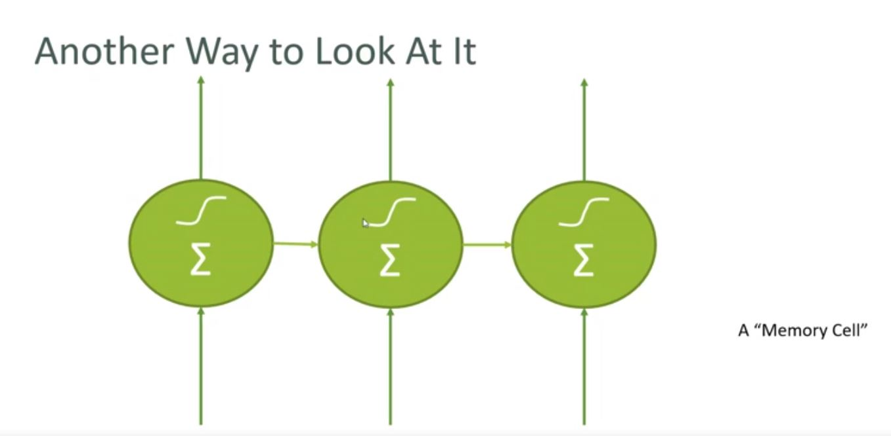

r-squared score
from sklearn.metrics import r2_score
r2 = r2_score(testy, p4(testx))
#其中,testy是实际的数据 p4(testx)是通过模型拟合的预测数据
print(r2)
#若pageSpeeds有100项
trainX = pageSpeeds[:80]#前八十项
testX = pageSpeeds[80:]#后20项
# Polynomial Regression
x = np.array(trainX)
y = np.array(trainY)
p4 = np.poly1d(np.polyfit(x, y, 8))# 最高项是8
#设置坐标轴
import matplotlib.pyplot as plt
axes = plt.axes()
axes.set_xlim([0,7])
axes.set_ylim([0, 200])
import os
import os.path
rootdir="D:\\论文"
for parent,dirnames,filenames in os.walk(rootdir):
for dirname in dirnames:
print 'parent is ',parent
print 'dirname is',dirname
for filename in filenames:
print 'parent is',parent
print 'filename is',filename
print 'fullname is '+os.path.join(parent,filename)
#还有类似这种的操作
for root, dirnames, filenames in os.walk(path):
for filename in filenames:
path = os.path.join(root, filename)
f = io.open(path, 'r', encoding='UTF-8')#只读文件
...
#生成斐波那契数列
def fab(max):
n, a, b = 0, 0, 1
while n < max:
yield b
# print b
a, b = b, a + b
n = n + 1
#在for循环中调用
for n in fab(5):
print n
#也可以使用next()方法查看下进程
>>> f = fab(5)
>>> f.next()
1
>>> f.next()
1
>>> f.next()
2
>>> f.next()
3
>>> f.next()
5
from sklearn.feature_extraction.text import CountVectorizer
vectorizer = CountVectorizer()
counts = vectorizer.fit_transform(data['message'].values)
from scipy import spatial
genreDistance = spatial.distance.cosine(genresA, genresB)
# 其中的cosine distance是专门用来测1D数组的相似度的；a measure of similarity between two non-zero
# vectors of an inner product space that measures the cosine of the angle between them
distances.sort(key=operator.itemgetter(1))
>>> import operator
>>> a = [ (1,'z'), (2, 'x'), (3, 'y') ]
>>> a.sort(key=operator.itemgetter(1))
>>> a
[(2, 'x'), (3, 'y'), (1, 'z')]
>>>
也就是根据tuple的第二个元素进行排序
from sklearn.decomposition import PCA
import pylab as pl
from itertools import cycle
# 将多维数据压缩为2维；whiten= True，对数据Normalized
pca = PCA(n_components=2, whiten=True).fit(X)
# 实现转化
X_pca = pca.transform(X)
# projecting it down to two orthogonal 4D vectors that make up the basis of our new 2D projection.
print(pca.components_)
[[ 0.36158968 -0.08226889 0.85657211 0.35884393]
[ 0.65653988 0.72971237 -0.1757674 -0.07470647]]
print(pca.explained_variance_ratio_)
print(sum(pca.explained_variance_ratio_))
[0.92461621 0.05301557]
0.9776317750248034
# First Dimension preserve 92% data, second dimension preserve 5% data
# altogether we've only really lost less than 3% of the variance in our data by projecting it down to two dimensions.
# Visualization
%matplotlib inline
from pylab import *
colors = cycle('rgb')
target_ids = range(len(iris.target_names))
pl.figure()
for i, c, label in zip(target_ids, colors, iris.target_names):
pl.scatter(X_pca[iris.target == i, 0], X_pca[iris.target == i, 1],
c=c, label=label)
pl.legend()
pl.show()
# Cycle循环器
count(5, 2) #从5开始的整数循环器，每次增加2，即5, 7, 9, 11, 13, 15 ...
cycle('abc') #重复序列的元素，既a, b, c, a, b, c ...
repeat(1.2) #重复1.2，构成无穷循环器，即1.2, 1.2, 1.2, ...

左边:high bias, low variance; 右边:low bias, high variance
from sklearn.model_selection import cross_val_score, train_test_split
from sklearn import datasets
from sklearn import svm
# Split the iris data into train/test data sets with 40% reserved for testing
X_train, X_test, y_train, y_test = train_test_split(iris.data, iris.target, test_size=0.4, random_state=0)
# Build an SVC model for predicting iris classifications using training data, 构造SVC模型
clf = svm.SVC(kernel='linear', C=1).fit(X_train, y_train)
# 使用测试数据对SVC进行测评
clf.score(X_test, y_test)
# 使用K-fold方法，对SCV进行测评
scores = cross_val_score(clf, iris.data, iris.target, cv=5)
import tensorflow as tf
a = tf.Variable(1, name="a")
b = tf.Variable(2, name="b")
# a variable object which contains a single value 1 and it is going by the name of "a"
# 然后赋给Python的变量a
f = a + b
# 并不是简单的加法。it is a graph. It is a connection that you are building up between A and B tensor
# establish the relationship between a and b and their dependency together on f
init = tf.global_variables_initializer()
with tf.Session() as s:
# stuff the values 1 and 2 inside a and b variables
init.run()
# f.eval() computation will actually finally happen
# 相当于告诉程序，让a=1，让b=2，并把它们加在一起
print( f.eval() )
# Define a alayer of a neural network
output = tf.matmul(previous_layer, layer_weights) + layer_biases
# Create an interactive session which makes it easier to work with TensorFlow with IPython
sess = tf.InteractiveSession()
# Think of one_hot as a binary representation of the label data - that is, which number
# each handwriting sample was intended to represent. Mathematically one_hot represents a dimension
# for every possible label value. Every dimension is set to the value 0, except for the "correct" one which is set to 1.
# For example, the label vector representing the number 1 would be [0, 1, 0, 0, 0, 0, 0, 0, 0, 0]
# (remember we start counting at 0.) It's just a format that's optimized
# for how the labels are applied during training.
mnist = input_data.read_data_sets("MNIST_data/", one_hot=True)
import matplotlib.pyplot as plt
def display_sample(num):
#Print the one-hot array of this sample's label
print(mnist.train.labels[num])
#Print the label converted back to a number
label = mnist.train.labels[num].argmax(axis=0)
#Reshape the 768 values to a 28x28 image
image = mnist.train.images[num].reshape([28,28])
plt.title('Sample: %d Label: %d' % (num, label))
# Display an image as grayscale
plt.imshow(image, cmap=plt.get_cmap('gray_r'))
plt.show()
display_sample(1234)
import numpy as np
images = mnist.train.images[0].reshape([1,784]) #将第一幅28*28的图转化为1*784
for i in range(1, 500):
images = np.concatenate((images, mnist.train.images[i].reshape([1,784])))
plt.imshow(images, cmap=plt.get_cmap('gray_r'))
plt.show()
# 创建placeholder， 这样做的好处是更加方便了
# While training, we'll assign input_images to the training images and target_labels to the training lables.
# While testing, we'll use the test images and test labels instead
input_images = tf.placeholder(tf.float32, shape=[None, 784])
target_labels = tf.placeholder(tf.float32, shape=[None, 10])
# 在这里None表示并不知道有多少行， 但随后会被自动填写
hidden_nodes = 512
input_weights = tf.Variable(tf.truncated_normal([784, hidden_nodes]))
# input是Normalized的数据，且该输入层有784个输入信号，也就是一个pixel一个输入
# 输出有512个隐藏层(hidden layer)节点
# 设置bias term on that layer
input_biases = tf.Variable(tf.zeros([hidden_nodes]))
# 对于隐藏层来说，有输入512，输出10
hidden_weights = tf.Variable(tf.truncated_normal([hidden_nodes, 10]))
# bias
hidden_biases = tf.Variable(tf.zeros([10]))
# Input Layer does matrix multiplication between input image layer and input weights
input_layer = tf.matmul(input_images, input_weights)
# Define hidden layer as using the relu activation function on sum of input matix multiplication and bias vector
hidden_layer = tf.nn.relu(input_layer + input_biases)
# 而output layer则是hidden_layer和hidden_weights的乘积和bias的和
digit_weights = tf.matmul(hidden_layer, hidden_weights) + hidden_biases
tf.global_variables_initializer().run()
# run 2000 training steps of 100 images on each batch
for x in range(2000):
# pick out the next 100 training images from our batch of training images
batch = mnist.train.next_batch(100)
# run optimizer
optimizer.run(feed_dict={input_images: batch[0], target_labels: batch[1]})
if ((x+1) % 100 == 0):
print("Training epoch " + str(x+1))
print("Accuracy: " + str(accuracy.eval(feed_dict={input_images: mnist.test.images, target_labels: mnist.test.labels})))
from tensorflow import keras
from tensorflow.keras.datasets import mnist
# A quick way to assemble the layers of a neural network
from tensorflow.keras.models import Sequential
from tensorflow.keras.layers import Dense, Dropout
# A better optimizer for gradient descent
from tensorflow.keras.optimizers import RMSprop
# 和tensorflow一样，构造输入的模型,60000数据，每个数据为784维
train_images = mnist_train_images.reshape(60000, 784)
test_images = mnist_test_images.reshape(10000, 784)
train_images = train_images.astype('float32')
test_images = test_images.astype('float32')
# Normalized
train_images /= 255
test_images /= 255
# Convert to one-hot 模式，convert the 0-9 labels into "one-hot" format
train_labels = keras.utils.to_categorical(mnist_train_labels, 10)
test_labels = keras.utils.to_categorical(mnist_test_labels, 10)
model = Sequential()
# Add one layer, output 512 neurons with an input shape of 784 neurons(每个像素一个neurons)
# and feed it into a hidden layer. Those neurons will have the relu activation function
model.add(Dense(512, activation='relu', input_shape=(784,)))
# Put a softmax activation function on top of it with final layer of 10; Use to define hidden layer
model.add(Dense(10, activation='softmax'))
model.summary() # 显示概况
# The loss function is categorical_crossentropy
# Optimizer有 RMSProp, Adam
model.compile(loss='categorical_crossentropy',
optimizer=RMSprop(),
metrics=['accuracy'])
history = model.fit(train_images, train_labels, # input data
batch_size=100,
epochs=10, # Run 10 times
verbose=2,
validation_data=(test_images, test_labels)) # Test Data
# Multi-class classification
model = Sequential()
model.add(Dense(64, activation='relu', input_dim=20))
# Discard half of the neurons on each training step to prevent overfitting
model.add(Dropout(0.5))
# 该模型拥有两个隐藏层
model.add(Dense(64,activation='relu'))
model.add(Dropout(0.5))
# 10 different output value
model.add(Dense(10,activation='softmax'))
# 对模型进行compile，并定义loss, optimizer
model.compile(loss='categorical_crossentropy', optimizer=sgd, metrics=['accuracy'])
# Binary classification
# A sequential model, put in a dense layer with 20 inputs, and 64 neurons in that layer
# Then feed to another layer of 64 neurons
# And finally goes to a binary classfier at the end
model = Sequential()
model.add(Dense(64, activation='relu', input_dim=20))
# Discard half of the neurons on each training step to prevent overfitting
model.add(Dropout(0.5))
# 该模型拥有两个隐藏层
model.add(Dense(64,activation='relu'))
model.add(Dropout(0.5))
# 1 output value
model.add(Dense(1,activation='sigmoid'))
# 对模型进行compile，并定义loss, optimizer
model.compile(loss='binary_crossentropy', optimizer=rmsprop, metrics=['accuracy'])
# Pass the estimator into scikit learn
# The scikit learn will run your neural network
estimator = KerasClassifier(build_fn=create_model, epochs, verbose=0)
from tensorflow import keras
from tensorflow.keras.layers import Dense, Dropout
from tensorflow.keras.models import Sequential
from sklearn.model_selection import cross_val_score
def create_model():
model = Sequential()
#16 feature inputs (votes) going into an 32-unit layer
model.add(Dense(32, input_dim=16, kernel_initializer='normal', activation='relu'))
# Another hidden layer of 16 units
model.add(Dense(16, kernel_initializer='normal', activation='relu'))
# Output layer with a binary classification (Democrat or Republican political party)
model.add(Dense(1, kernel_initializer='normal', activation='sigmoid'))
# Compile model
model.compile(loss='binary_crossentropy', optimizer='rmsprop', metrics=['accuracy'])
return model
from tensorflow.keras.wrappers.scikit_learn import KerasClassifier
# Wrap our Keras model in an estimator compatible with scikit_learn
estimator = KerasClassifier(build_fn=create_model, nb_epoch=100, verbose=0)
# Now we can use scikit_learn's cross_val_score to evaluate this model identically to the others
cv_scores = cross_val_score(estimator, all_features, all_classes, cv=10)
cv_scores.mean()
from tensorflow.keras.models import Sequential
from tensorflow.keras.layers import Dense, Dropout, Conv2D, MaxPooling2D, Flatten
# Define Optimizer
from tensorflow.keras.optimizers import RMSprop
# convert our train and test labels to be categorical in one-hot format
train_labels = tensorflow.keras.utils.to_categorical(mnist_train_labels, 10)
test_labels = tensorflow.keras.utils.to_categorical(mnist_test_labels, 10)
model = Sequential()
# Our convolution 2D layer has 32 windows. Windows are used to sample that image with
# 3x3 filter
# It also need input shape of data
model.add(Conv2D(32, kernel_size=(3, 3),
activation='relu',
input_shape=input_shape))
# add a second convolutional filter on top of previous one;
# have 64 kernals which are all 3x3 size, activation function is relu
model.add(Conv2D(64, (3, 3), activation='relu'))
# 池化，池化大小是2x2
# Reduce by taking the max of each 2x2 block
model.add(MaxPooling2D(pool_size=(2, 2)))
# Dropout to avoid overfitting
model.add(Dropout(0.25))
# Flatten the results to one dimension for passing into our final layer
model.add(Flatten())
# A hidden layer，该layer有128个neurons
model.add(Dense(128, activation='relu'))
# Another dropout
model.add(Dropout(0.5))
# Final categorization from 0-9 with softmax
model.add(Dense(10, activation='softmax'))
model.compile(loss='categorical_crossentropy',
optimizer='adam',
metrics=['accuracy'])
# Run convolution neural network
history = model.fit(train_images, train_labels,
batch_size=32,
epochs=10,
verbose=2, #等于2是为了running within an Ipython Notebook
validation_data=(test_images, test_labels))

Memory Cell
x = np.arange(-2,2)
y = np.arange(0,3)#生成一位数组，其实也就是向量
x
Out[31]: array([-2, -1, 0, 1])
y
Out[32]: array([0, 1, 2])
z,s = np.meshgrid(x,y)#将两个一维数组变为二维矩阵
z
Out[36]:
array([[-2, -1, 0, 1],
[-2, -1, 0, 1],
[-2, -1, 0, 1]])
s
Out[37]:
array([[0, 0, 0, 0],
[1, 1, 1, 1],
[2, 2, 2, 2]])
# Pandas
%matplotlib inline
import numpy as np
import pandas as pd
df = pd.read_csv("PastHires.csv")
df.head(14) #Specify the rows that will be visualized
df.tail(4) # Specify the last 4 rows
# 另一种读取Table的方法
r_cols = ['user_id', 'movie_id', 'rating']
ratings = pd.read_csv('C:/Users/Nuo Xu/Desktop/summer/DataScience/DataScience-Python3/ml-100k/u.data', ...
... sep='\t', names=r_cols, usecols=range(3))
ratings.head()
# sep定义数据是用的什么分隔符
movieProperties = ratings.groupby('movie_id').agg({'rating': [np.size, np.mean]})
movieProperties.head()
# 对原数据进行groupby，依据是movie_d，并生成一个rating的属性，rating属性包括np.size和np.mean两个附加属性
movieNumRatings = pd.DataFrame(movieProperties['rating']['size'])
movieNormalizedNumRatings = movieNumRatings.apply(lambda x: (x - np.min(x)) / (np.max(x) - np.min(x)))
# 对movieNumRatings的每一行数据套入匿名函数中进行运算
#返回删除 string 字符串末尾的指定字符后生成的新字符串。
#!/usr/bin/python
str = " this is string example....wow!!! ";
print str.rstrip();
str = "88888888this is string example....wow!!!8888888";
print str.rstrip('8');
# 输出显示
this is string example....wow!!!
88888888this is string example....wow!!!
# for循环
def reject_outliers(data):
u = np.median(data)
s = np.std(data)
filtered = [e for e in data if (u - 2 * s < e < u + 2 * s)]
# 对于每一个在data中的数据，当满足if条件的时候，插入filtered
return filtered